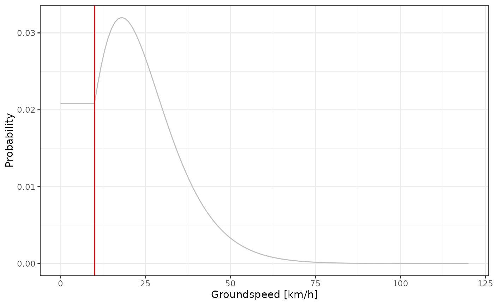
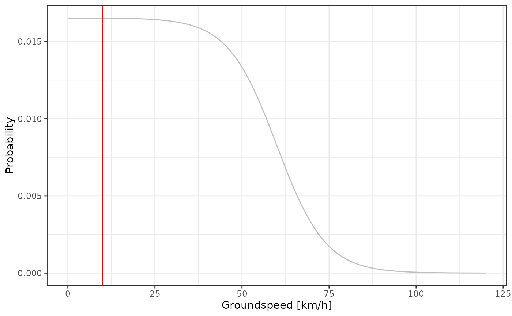

Configure the movement model of a graph by defining the value of the parameters needed to build
the transition graph_transition() through speed2prob().
Three methods are currently implemented with two parametric function "gamma" and "logis"
suitable when wind data is not available and are thus defining the probability of a groundspeed.
If wind data is available, it is recommended to use the "power" method which rely on the power
curve equation (energy vs airspeed) to estimate the probability of a airspeed. Read more about
this approach in section 2.2.5. of Nussbaumer et al. (2023b)
Arguments
- graph
a GeoPressureR
graphobject.- type
Ground speed
"gs"or airspeed"as"- method
method used to convert the speed to probability ("gamma", "logis" or "power")
- shape
parameter of the gamma distribution (km/h)
- scale
parameter of the gamma and logistic distribution (km/h)
- location
parameter for the logistic distribution (km/h)
- bird
A GeoPressureR
birdobject containing the basic morphological traits necessary: mass, wing span, wing aspect ratio, and body frontal area. Seebird_create().- power2prob
function taking power as a single argument and returning a probability
- low_speed_fix
speed below which the probability remains the same, i.e. we assign the same probability at
low_speed_fixfor any lower speed. This parameter is used to allow short flights covering small distances. (unit of km/h)- zero_speed_ratio
multiplicative ratio of the probability for speed zero. This ratio apply only when the bird is stayin at the same location (fly and come back or stay within pixel size). This parameter (when greater than 1) is used to favour a bird to stay at the same location rather than perform short fly.
Value
Graph list with a new list graph$movement storing all the parameters needed to compute
the transition probability
References
Nussbaumer, Raphaël, Mathieu Gravey, Martins Briedis, Felix Liechti, and Daniel Sheldon. 2023. Reconstructing bird trajectories from pressure and wind data using a highly optimized hidden Markov model. Methods in Ecology and Evolution, 14, 1118–1129 https://doi.org/10.1111/2041-210X.14082.
See also
Other graph:
graph_create(),
graph_marginal(),
graph_most_likely(),
graph_simulation(),
print.graph()
Other movement:
bird_create(),
graph_transition(),
plot_graph_movement(),
speed2prob(),
tag_download_wind()
Examples
withr::with_dir(system.file("extdata", package = "GeoPressureR"), {
tag <- tag_create("18LX", quiet = TRUE) |>
tag_label(quiet = TRUE) |>
twilight_create() |>
twilight_label_read() |>
tag_set_map(
extent = c(-16, 23, 0, 50),
known = data.frame(stap_id = 1, known_lon = 17.05, known_lat = 48.9)
) |>
geopressure_map(quiet = TRUE) |>
geolight_map(quiet = TRUE)
})
graph <- graph_create(tag, quiet = TRUE)
graph <- graph_set_movement(graph,
method = "gamma",
shape = 4,
scale = 6,
low_speed_fix = 10
)
plot_graph_movement(graph)

graph <- graph_set_movement(graph,
method = "logis",
shape = 4,
location = 60,
low_speed_fix = 10
)
plot_graph_movement(graph)
